02 / Time matters
Judge the result while it moves
These matched orbit clips hold actors and foliage still. Compare the same scene and camera path. The working choice uses full-detail mercenary preparation followed by one shared resolve; it avoids reducing his face twice.
Working · one final grid
Separate character detail
Rigid surface paint · full display
Earlier sampling control
Recommendation: one shared grid at 40 samples per metre, with deliberate source features, soft light bands, fixed shadow sampling, still foliage and restrained cloth. This is shaped 3D rendered as pixels. The artwork stays attached to the body; newly visible edges still change as the camera turns. It is not a promise of frozen screen pixels or permanent voxel anatomy.
Pose timing on the same walking scene
Working · 12 poses/second
8 poses/second
Smooth source motion
Twelve held poses keep stronger beats without the more abrupt eight-pose motion. Travel and camera motion remain continuous. These are study clips, not a complete set of authored combat or work animations.
Close mercenary · walk, orbit and arm-pose fixtureFirelit walk and arm-pose fixture
All location and animal clips
Woodland / meadow · staged travel
River / ford · staged travel
Lookout · staged travel
Mending clearing · staged travel
Riverside workshop · staged travel
Broken watchpost · staged travel
Hare · source/study locomotion
Wolf · source/study locomotion
Bear · source/study locomotion
Bird · source/study locomotion
05 / Art targets, clearly separated from evidence
Composition and color studies
These are annotated art-direction targets over the actual scene layout, not paintovers or additional runtime captures. The unannotated originals appear above. Each target identifies the visual relationship to reproduce and the remaining weakness to judge.
Art target · annotation
Bright camp
Identity: warm face, red mantleCrown gaps frame the peopleQuiet ground for feet and tools
Keep the mercenary’s original identity, natural adult scale and grounded feet. Fine detail belongs on faces and fittings. The current terrain supports still interrupt the organic composition.
Art target · annotation
Woodland shade
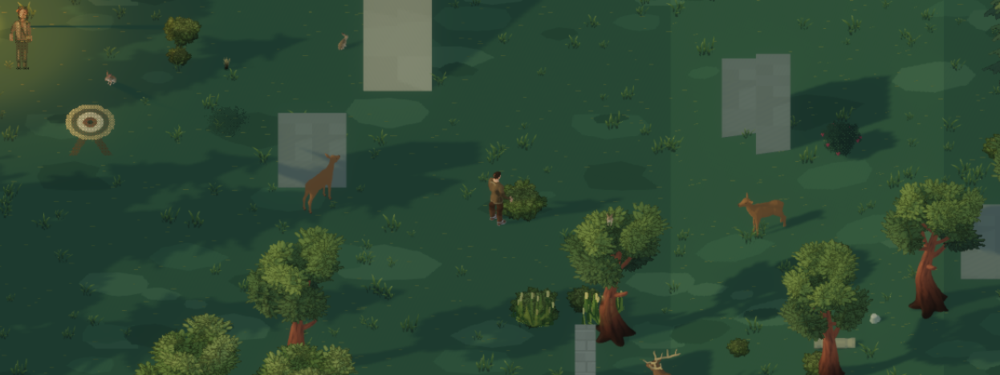
Near crowns: grouped detailAnimal silhouette against quiet groundDistance: lower contrast
Let overlapping foliage form larger masses, with useful openings around animals. Source crown structure is improved; planar conifer boughs and rectangular terrain remain visible.
Art target · annotation
Evening gathering
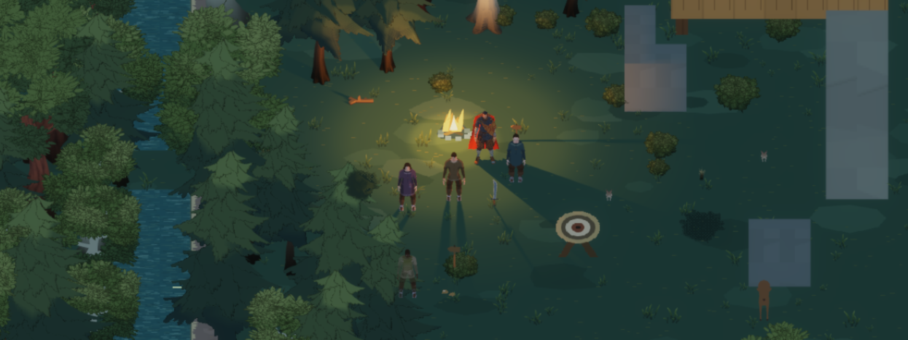
One visible source: the fireWarm skin, cloth and timberCool, readable woodland
Warmth should reach people, possessions and ground while the surroundings remain readable. Judge the fire-on/off pair rather than attributing every orange surface to lighting.
06 / Every option retained
Source → three interpretations → working choice
Each comparison uses the same inspector light and sampling for its three options. A, B and C refer to left, middle and right. Source controls show the normalized original. All selections are reversible; costume changes are visual proposals.
41 families
People
Peacock Mercenary
Working choice · restored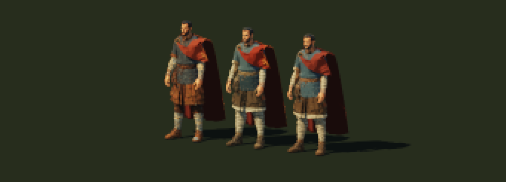
A · restoredEarlier concept-derived model and 29-color surface preparation, with original face detail, fitted eye accents and gold mantle preserved.
2.04 m tall · 42,500 triangles
B · tailoredOriginal face anatomy with fitted eye accents, quiet mail, broader quilt seams and wrapped linen. Original cape retained.
2.04 m tall · 42,500 triangles
C · embroideredOriginal face with fitted eye accents, open mail groups, seams and paired peacock embroidery. Cloth remains a continuous lined surface.
2.04 m tall · 42,500 triangles
Why this choice: Restored keeps the original red mantle, mail, brown quilting and face closest to your concept. Quiet tailoring loses some identity; the embroidery option spreads attention across the chest. The continuous cape stays attached to the existing rig and cloth owner.
Original/library source control
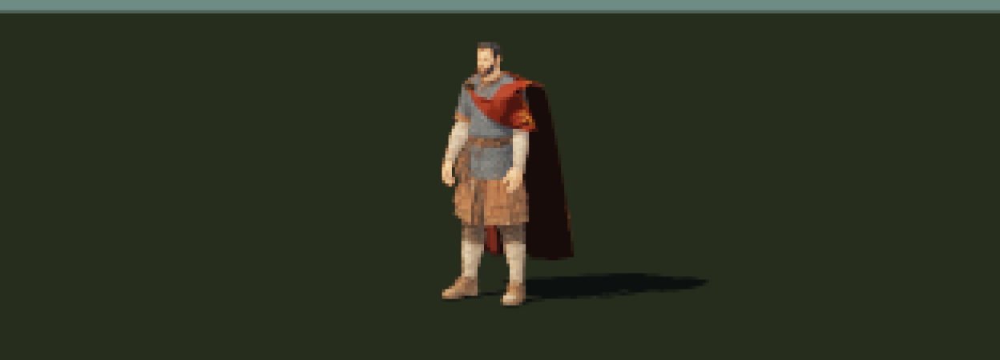
Editable source, exports and rights
Editable Blender file
- restored GLB — Owner-supplied concept → Meshy body/rig; original OpenLegend cape. Study use; production rights remain unqualified.
- tailored GLB — Owner-supplied concept → Meshy body/rig; original OpenLegend cape. Study use; production rights remain unqualified.
- embroidered GLB — Owner-supplied concept → Meshy body/rig; original OpenLegend cape. Study use; production rights remain unqualified.
Exact source and export hashes are retained in the repository catalog.
People
Ada
Working choice · field tunic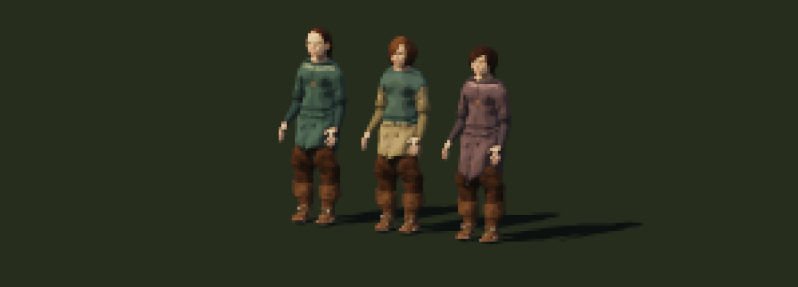
A · field tunicFitted field tunic with a restrained collar and hem. Anatomical eyes and hands; plain wool replaces the source mail print.
1.85 m tall · 35,892 triangles
B · work vestShort fitted vest over linen with a clear waist. The underlayer remains complete beneath the tailored vest.
1.85 m tall · 35,692 triangles
C · travel coatLonger muted travel coat with broad cloth panels and a small collar fastening.
1.85 m tall · 36,058 triangles
Why this choice: Field tunic gives the strongest plain-wool silhouette and leaves the face readable. The vest and long coat are retained, without treating either costume as armor.
Original/library source control
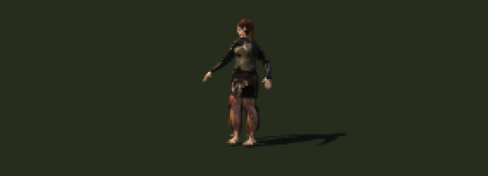
Editable source, exports and rights
Editable Blender file
- field-tunic GLB — MakeHuman/MPFB core anatomy, eyes, hair and Rehman Polanski Viking garments: CC0. OpenLegend tailoring and painting: AGPL-3.0-only. Appearance is a study proposal.
- work-vest GLB — MakeHuman/MPFB core anatomy, eyes, hair and Rehman Polanski Viking garments: CC0. OpenLegend tailoring and painting: AGPL-3.0-only. Appearance is a study proposal.
- travel-coat GLB — MakeHuman/MPFB core anatomy, eyes, hair and Rehman Polanski Viking garments: CC0. OpenLegend tailoring and painting: AGPL-3.0-only. Appearance is a study proposal.
Exact source and export hashes are retained in the repository catalog.
People
Mike
Working choice · field tunic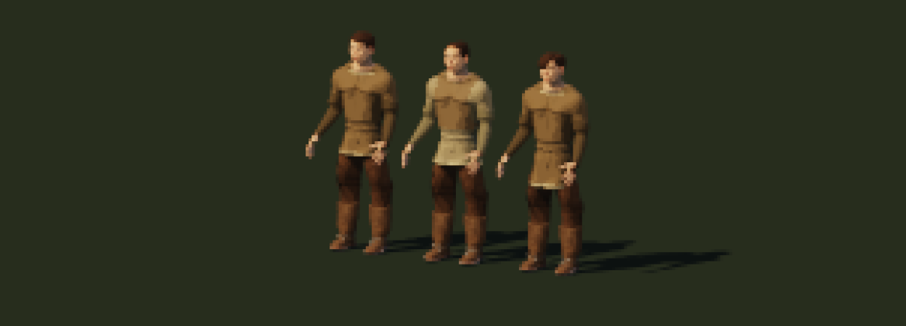
A · field tunicFitted field tunic with a restrained collar and hem. Anatomical eyes and hands; plain wool replaces the source mail print.
1.85 m tall · 33,884 triangles
B · work vestShort fitted vest over linen with a clear waist. The underlayer remains complete beneath the tailored vest.
1.85 m tall · 33,062 triangles
C · travel coatLonger muted travel coat with broad cloth panels and a small collar fastening.
1.85 m tall · 32,462 triangles
Why this choice: Field tunic keeps a clear waist and familiar human proportions; more elaborate outerwear competes with the mercenary.
Original/library source control
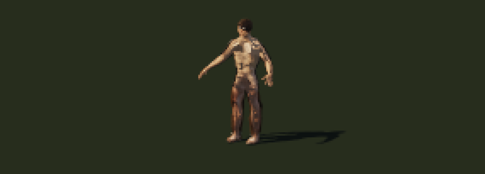
Editable source, exports and rights
Editable Blender file
- field-tunic GLB — MakeHuman/MPFB core anatomy, eyes, hair and Rehman Polanski Viking garments: CC0. OpenLegend tailoring and painting: AGPL-3.0-only. Appearance is a study proposal.
- work-vest GLB — MakeHuman/MPFB core anatomy, eyes, hair and Rehman Polanski Viking garments: CC0. OpenLegend tailoring and painting: AGPL-3.0-only. Appearance is a study proposal.
- travel-coat GLB — MakeHuman/MPFB core anatomy, eyes, hair and Rehman Polanski Viking garments: CC0. OpenLegend tailoring and painting: AGPL-3.0-only. Appearance is a study proposal.
Exact source and export hashes are retained in the repository catalog.
People
Mara Reed
Working choice · travel coat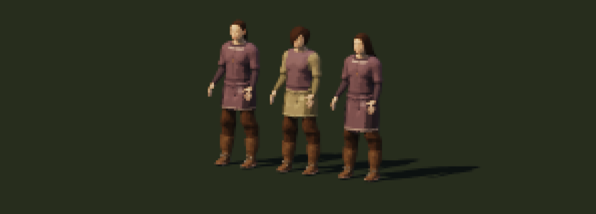
A · field tunicFitted field tunic with a restrained collar and hem. Anatomical eyes and hands; plain wool replaces the source mail print.
1.85 m tall · 35,892 triangles
B · work vestShort fitted vest over linen with a clear waist. The underlayer remains complete beneath the tailored vest.
1.85 m tall · 41,010 triangles
C · travel coatLonger muted travel coat with broad cloth panels and a small collar fastening.
1.85 m tall · 34,648 triangles
Why this choice: Travel coat best carries Mara’s patched, practical clothing. Her authored red satchel with blue-cross stitching remains a separate existing item; the new backpack does not replace it.
Original/library source control
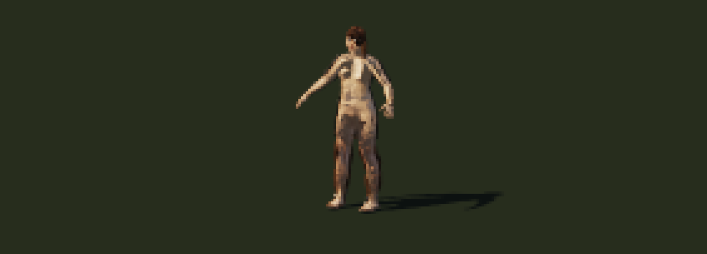
Editable source, exports and rights
Editable Blender file
- field-tunic GLB — MakeHuman/MPFB core anatomy, eyes, hair and Rehman Polanski Viking garments: CC0. OpenLegend tailoring and painting: AGPL-3.0-only. Appearance is a study proposal.
- work-vest GLB — MakeHuman/MPFB core anatomy, eyes, hair and Rehman Polanski Viking garments: CC0. OpenLegend tailoring and painting: AGPL-3.0-only. Appearance is a study proposal.
- travel-coat GLB — MakeHuman/MPFB core anatomy, eyes, hair and Rehman Polanski Viking garments: CC0. OpenLegend tailoring and painting: AGPL-3.0-only. Appearance is a study proposal.
Exact source and export hashes are retained in the repository catalog.
People
Tavin Vale
Working choice · work vest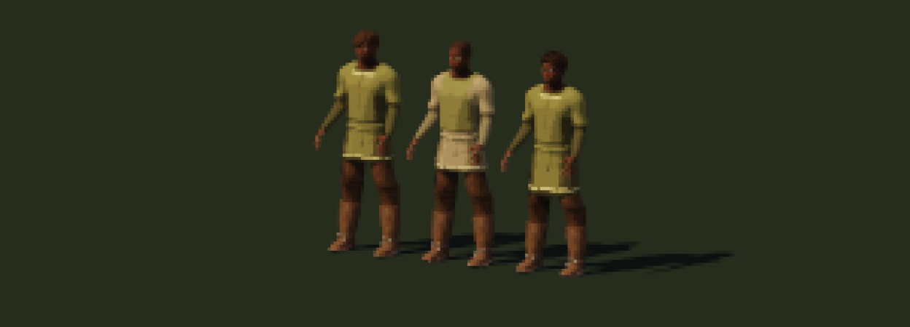
A · field tunicFitted field tunic with a restrained collar and hem. Anatomical eyes and hands; plain wool replaces the source mail print.
1.85 m tall · 32,462 triangles
B · work vestShort fitted vest over linen with a clear waist. The underlayer remains complete beneath the tailored vest.
1.85 m tall · 33,076 triangles
C · travel coatLonger muted travel coat with broad cloth panels and a small collar fastening.
1.85 m tall · 32,732 triangles
Why this choice: Work vest gives Tavin the clearest woven waist-and-shoulder silhouette beside Mara’s longer coat.
Original/library source control
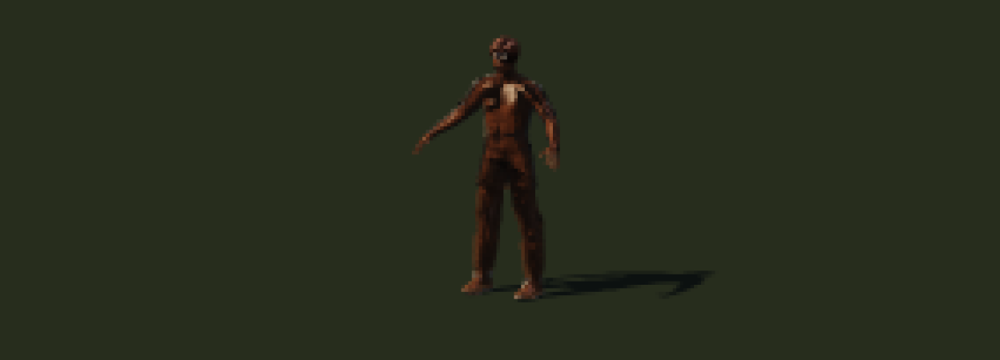
Editable source, exports and rights
Editable Blender file
- field-tunic GLB — MakeHuman/MPFB core anatomy, eyes, hair and Rehman Polanski Viking garments: CC0. OpenLegend tailoring and painting: AGPL-3.0-only. Appearance is a study proposal.
- work-vest GLB — MakeHuman/MPFB core anatomy, eyes, hair and Rehman Polanski Viking garments: CC0. OpenLegend tailoring and painting: AGPL-3.0-only. Appearance is a study proposal.
- travel-coat GLB — MakeHuman/MPFB core anatomy, eyes, hair and Rehman Polanski Viking garments: CC0. OpenLegend tailoring and painting: AGPL-3.0-only. Appearance is a study proposal.
Exact source and export hashes are retained in the repository catalog.
People
Kest
Working choice · travel coat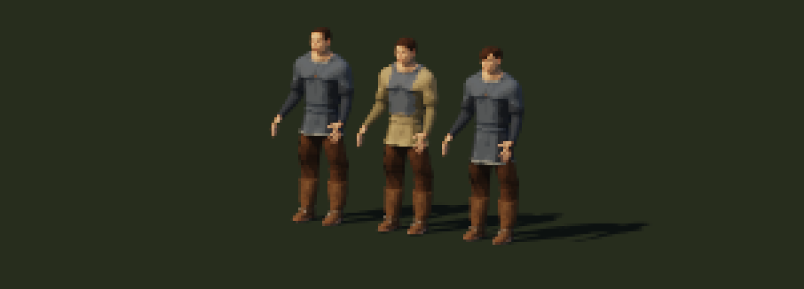
A · field tunicFitted field tunic with a restrained collar and hem. Anatomical eyes and hands; plain wool replaces the source mail print.
1.85 m tall · 31,590 triangles
B · work vestShort fitted vest over linen with a clear waist. The underlayer remains complete beneath the tailored vest.
1.85 m tall · 35,148 triangles
C · travel coatLonger muted travel coat with broad cloth panels and a small collar fastening.
1.85 m tall · 32,462 triangles
Why this choice: Travel coat establishes the longer, muted silhouette among the watchpost figures without granting any new protection.
Original/library source control
Editable source, exports and rights
Editable Blender file
- field-tunic GLB — MakeHuman/MPFB core anatomy, eyes, hair and Rehman Polanski Viking garments: CC0. OpenLegend tailoring and painting: AGPL-3.0-only. Appearance is a study proposal.
- work-vest GLB — MakeHuman/MPFB core anatomy, eyes, hair and Rehman Polanski Viking garments: CC0. OpenLegend tailoring and painting: AGPL-3.0-only. Appearance is a study proposal.
- travel-coat GLB — MakeHuman/MPFB core anatomy, eyes, hair and Rehman Polanski Viking garments: CC0. OpenLegend tailoring and painting: AGPL-3.0-only. Appearance is a study proposal.
Exact source and export hashes are retained in the repository catalog.
People
Orin
Working choice · field tunic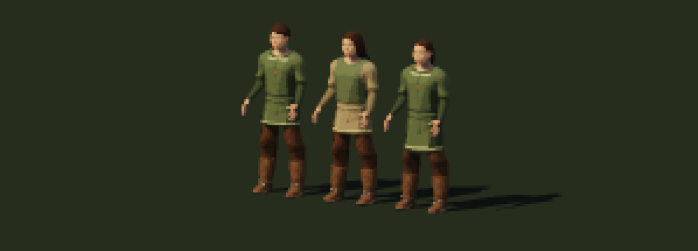
A · field tunicFitted field tunic with a restrained collar and hem. Anatomical eyes and hands; plain wool replaces the source mail print.
1.85 m tall · 33,884 triangles
B · work vestShort fitted vest over linen with a clear waist. The underlayer remains complete beneath the tailored vest.
1.85 m tall · 36,506 triangles
C · travel coatLonger muted travel coat with broad cloth panels and a small collar fastening.
1.85 m tall · 35,892 triangles
Why this choice: Field tunic keeps Orin distinct from Kest’s long coat. Facial expression and unique gestures remain less developed than the leading character reference.
Original/library source control
Editable source, exports and rights
Editable Blender file
- field-tunic GLB — MakeHuman/MPFB core anatomy, eyes, hair and Rehman Polanski Viking garments: CC0. OpenLegend tailoring and painting: AGPL-3.0-only. Appearance is a study proposal.
- work-vest GLB — MakeHuman/MPFB core anatomy, eyes, hair and Rehman Polanski Viking garments: CC0. OpenLegend tailoring and painting: AGPL-3.0-only. Appearance is a study proposal.
- travel-coat GLB — MakeHuman/MPFB core anatomy, eyes, hair and Rehman Polanski Viking garments: CC0. OpenLegend tailoring and painting: AGPL-3.0-only. Appearance is a study proposal.
Exact source and export hashes are retained in the repository catalog.
People
Padded armor study
Working choice · field tunic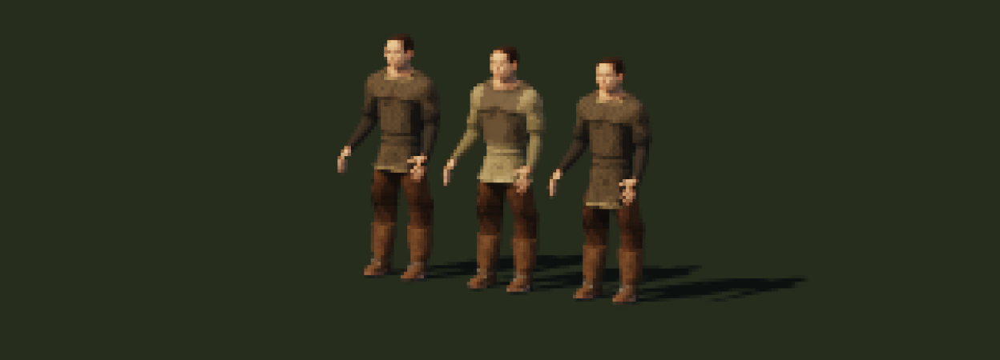
A · field tunicFitted field tunic with a restrained collar and hem. Anatomical eyes and hands; plain wool replaces the source mail print.
1.85 m tall · 31,590 triangles
B · work vestShort fitted vest over linen with a clear waist. The underlayer remains complete beneath the tailored vest.
1.85 m tall · 33,056 triangles
C · travel coatLonger muted travel coat with broad cloth panels and a small collar fastening.
1.85 m tall · 31,590 triangles
Why this choice: Field tunic is the quieter ordinary-body control. The retained mail and fitted overlays allow a material comparison; this study grants no equipment or combat statistics.
Original/library source control
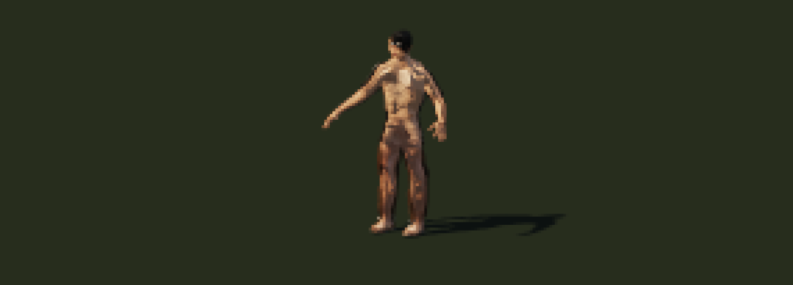
Editable source, exports and rights
Editable Blender file
- field-tunic GLB — MakeHuman/MPFB core anatomy, eyes, hair and Rehman Polanski Viking garments: CC0. OpenLegend tailoring and painting: AGPL-3.0-only. Appearance is a study proposal.
- work-vest GLB — MakeHuman/MPFB core anatomy, eyes, hair and Rehman Polanski Viking garments: CC0. OpenLegend tailoring and painting: AGPL-3.0-only. Appearance is a study proposal.
- travel-coat GLB — MakeHuman/MPFB core anatomy, eyes, hair and Rehman Polanski Viking garments: CC0. OpenLegend tailoring and painting: AGPL-3.0-only. Appearance is a study proposal.
Exact source and export hashes are retained in the repository catalog.
Animals
Hare
Working choice · field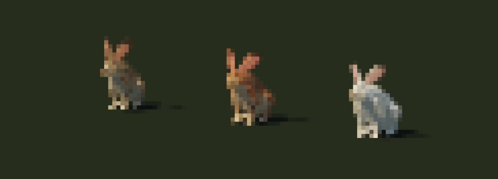
A · fieldLean field hare, long ears, quiet belly and dark ear tips. Original source Idle/Run clips retained.
0.45 m tall · 1,532 triangles
B · russetBroader shoulders and outward ears with russet haunch grouping. Original source Idle/Run clips retained.
0.45 m tall · 1,532 triangles
C · winterFuller body and shorter ears with restrained winter coat fields. Original source Idle/Run clips retained.
0.45 m tall · 1,532 triangles
Why this choice: Field coat balances a pale muzzle and darker ear tips with the strongest source anatomy. The hop retains the acquired rig; it is not a stretched procedural rabbit.
Original/library source control
Editable source, exports and rights
Editable Blender file
- field GLB — Rabbit by CDmir/TinyWorlds, CC0; OpenLegend proportions and fixed coat design.
- russet GLB — Rabbit by CDmir/TinyWorlds, CC0; OpenLegend proportions and fixed coat design.
- winter GLB — Rabbit by CDmir/TinyWorlds, CC0; OpenLegend proportions and fixed coat design.
Exact source and export hashes are retained in the repository catalog.
Animals
Deer
Working choice · woodland doe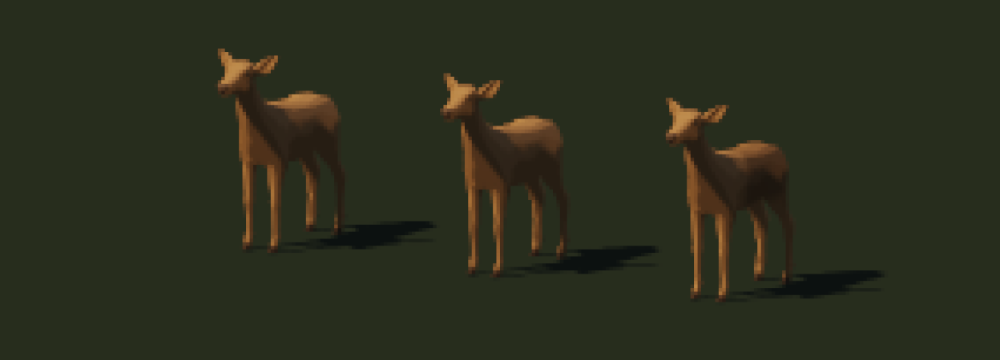
A · woodland doeWoodland doe: retained source anatomy with deliberate coat regions. Source idle/walk clips.
1.45 m tall · 2,098 triangles
B · slender doeSlender doe: retained source anatomy with deliberate coat regions. Source idle/walk clips.
1.45 m tall · 2,098 triangles
C · dark backDark back: retained source anatomy with deliberate coat regions. Source idle/walk clips.
1.45 m tall · 2,098 triangles
Why this choice: Woodland doe keeps the neck, head and light underside clear with limited coat noise.
Original/library source control
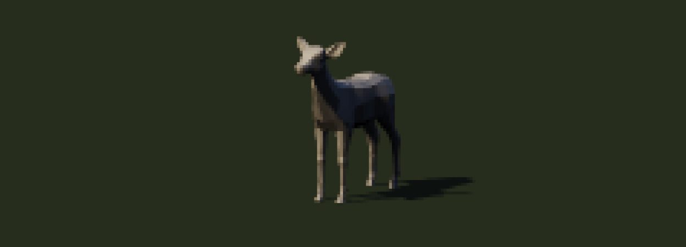
Editable source, exports and rights
Editable Blender file
- woodland-doe GLB — Quaternius Ultimate Animated Animals, CC0; coat grouping and proportions by OpenLegend; source Idle and Walk clips retained.
- slender-doe GLB — Quaternius Ultimate Animated Animals, CC0; coat grouping and proportions by OpenLegend; source Idle and Walk clips retained.
- dark-back GLB — Quaternius Ultimate Animated Animals, CC0; coat grouping and proportions by OpenLegend; source Idle and Walk clips retained.
Exact source and export hashes are retained in the repository catalog.
Animals
Stag
Working choice · branching antlers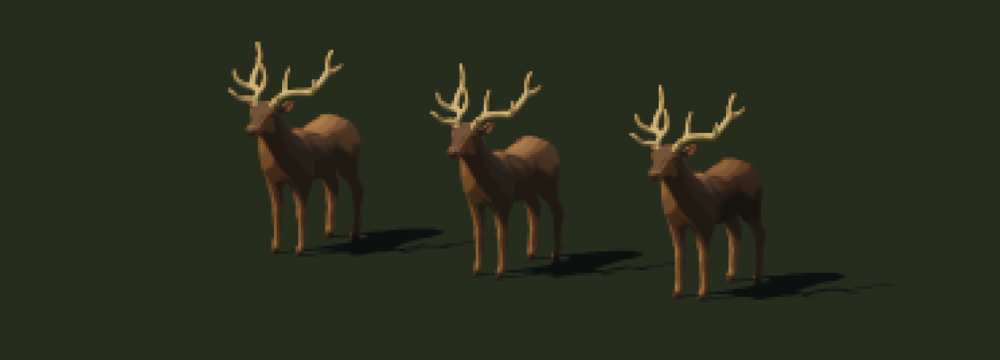
A · branching antlersBranching antlers: retained source anatomy with deliberate coat regions. Source idle/walk clips.
1.95 m tall · 3,670 triangles
B · slender stagSlender stag: retained source anatomy with deliberate coat regions. Source idle/walk clips.
1.95 m tall · 3,670 triangles
C · dark mantleDark mantle: retained source anatomy with deliberate coat regions. Source idle/walk clips.
1.95 m tall · 3,670 triangles
Why this choice: Branching antlers distinguish the stag from the doe without relying on tint alone.
Original/library source control
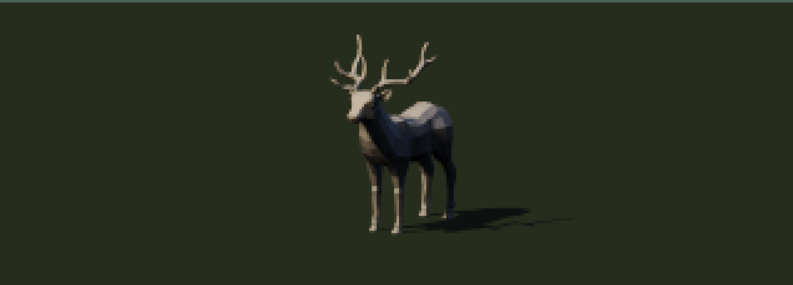
Editable source, exports and rights
Editable Blender file
- branching-antlers GLB — Quaternius Ultimate Animated Animals, CC0; coat grouping and proportions by OpenLegend; source Idle and Walk clips retained.
- slender-stag GLB — Quaternius Ultimate Animated Animals, CC0; coat grouping and proportions by OpenLegend; source Idle and Walk clips retained.
- dark-mantle GLB — Quaternius Ultimate Animated Animals, CC0; coat grouping and proportions by OpenLegend; source Idle and Walk clips retained.
Exact source and export hashes are retained in the repository catalog.
Animals
Wolf
Working choice · field grey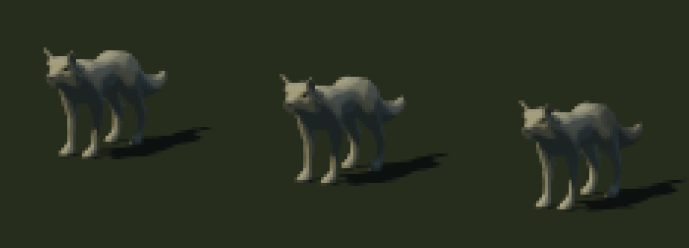
A · field greyField grey: retained source anatomy with deliberate coat regions. Source idle/walk clips.
0.96 m tall · 1,962 triangles
B · full ruffFull ruff: retained source anatomy with deliberate coat regions. Source idle/walk clips.
0.96 m tall · 1,962 triangles
C · dark saddleDark saddle: retained source anatomy with deliberate coat regions. Source idle/walk clips.
0.96 m tall · 1,962 triangles
Why this choice: Field grey preserves a long muzzle, darker back and leg separation. Its ordinary walking clip is retained from the source.
Original/library source control
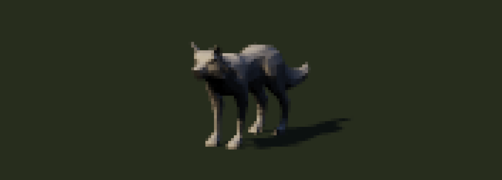
Editable source, exports and rights
Editable Blender file
- field-grey GLB — Quaternius Ultimate Animated Animals, CC0; coat grouping and proportions by OpenLegend; source Idle and Walk clips retained.
- full-ruff GLB — Quaternius Ultimate Animated Animals, CC0; coat grouping and proportions by OpenLegend; source Idle and Walk clips retained.
- dark-saddle GLB — Quaternius Ultimate Animated Animals, CC0; coat grouping and proportions by OpenLegend; source Idle and Walk clips retained.
Exact source and export hashes are retained in the repository catalog.
Animals
Bear
Working choice · forest brown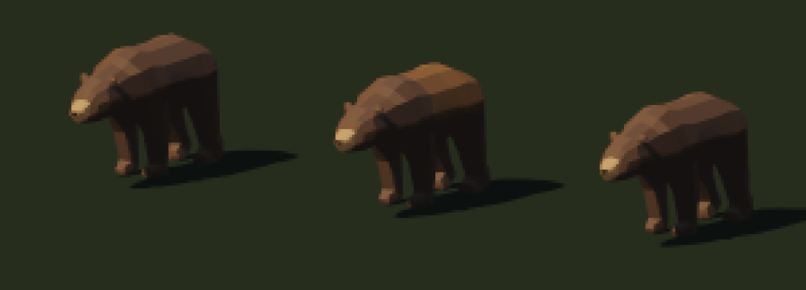
A · forest brownForest brown: retained source anatomy with deliberate coat regions. Authored study idle/walk clips; no new native action.
1.25 m tall · 946 triangles
B · heavy shoulderHeavy shoulder: retained source anatomy with deliberate coat regions. Authored study idle/walk clips; no new native action.
1.25 m tall · 946 triangles
C · pale muzzlePale muzzle: retained source anatomy with deliberate coat regions. Authored study idle/walk clips; no new native action.
1.25 m tall · 946 triangles
Why this choice: Forest brown has the clearest broad body and muzzle. The source is angular and its newly authored walk is a study clip, not a complete bear behavior library.
Original/library source control
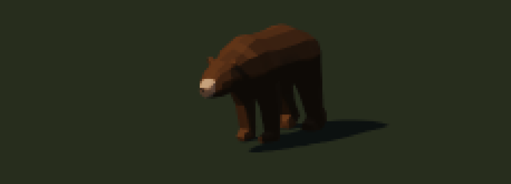
Editable source, exports and rights
Editable Blender file
- forest-brown GLB — Bear by madtrollstudio, CC BY 3.0, https://poly.pizza/m/kLLBpmcw0w; recolored, proportion study and rig by OpenLegend.
- heavy-shoulder GLB — Bear by madtrollstudio, CC BY 3.0, https://poly.pizza/m/kLLBpmcw0w; recolored, proportion study and rig by OpenLegend.
- pale-muzzle GLB — Bear by madtrollstudio, CC BY 3.0, https://poly.pizza/m/kLLBpmcw0w; recolored, proportion study and rig by OpenLegend.
Exact source and export hashes are retained in the repository catalog.
Animals
Woodland bird
Working choice · grey wing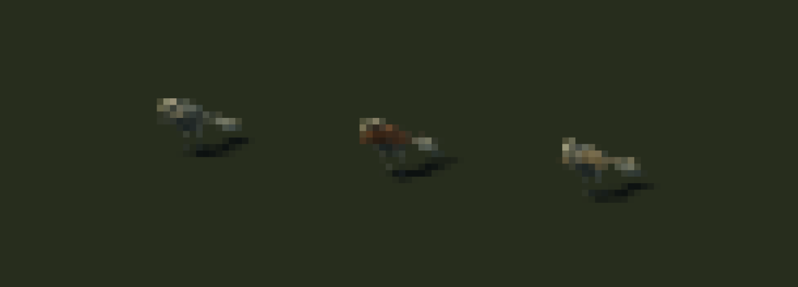
A · grey wingGrey wing: retained source anatomy with deliberate coat regions. Authored study idle/walk clips; no new native action.
0.23 m tall · 996 triangles
B · warm bibWarm bib: retained source anatomy with deliberate coat regions. Authored study idle/walk clips; no new native action.
0.23 m tall · 996 triangles
C · wing barsWing bars: retained source anatomy with deliberate coat regions. Authored study idle/walk clips; no new native action.
0.23 m tall · 996 triangles
Why this choice: Grey wing gives a restrained pale face and darker wing. The ground walk now keeps the wings folded; no flight behavior is claimed.
Original/library source control
Editable source, exports and rights
Editable Blender file
- grey-wing GLB — Yellow-billed shrike by pistachio, CC0, OpenGameArt; woodland plumage and idle/walk study by OpenLegend.
- warm-bib GLB — Yellow-billed shrike by pistachio, CC0, OpenGameArt; woodland plumage and idle/walk study by OpenLegend.
- wing-bars GLB — Yellow-billed shrike by pistachio, CC0, OpenGameArt; woodland plumage and idle/walk study by OpenLegend.
Exact source and export hashes are retained in the repository catalog.
Nature
Library broadleaf
Working choice · sheltered crown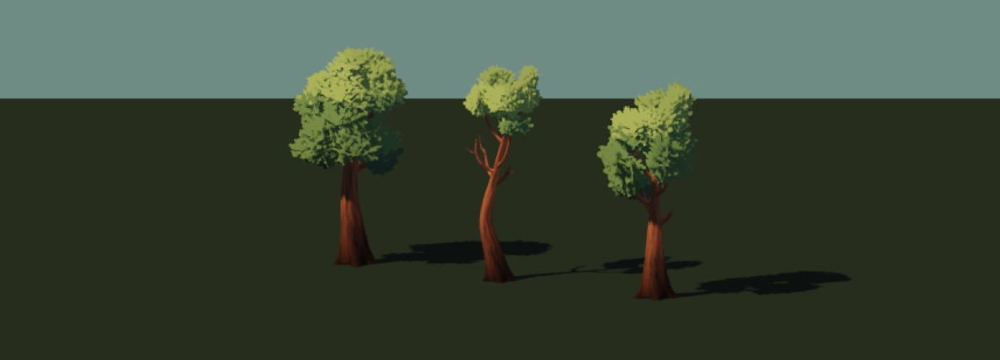
A · open boughsActual Quaternius branch structure with preserved leaf groups, olive/moss color relationships and quieter bark. Crown arrangement comparison.
4.80 m tall · 6,265 triangles
B · layered crownActual Quaternius branch structure with preserved leaf groups, olive/moss color relationships and quieter bark. Crown arrangement comparison.
4.80 m tall · 4,066 triangles
C · sheltered crownActual Quaternius branch structure with preserved leaf groups, olive/moss color relationships and quieter bark. Crown arrangement comparison.
4.80 m tall · 3,182 triangles
Why this choice: Sheltered crown has the clearest asymmetric mass and visible trunk. The alternatives compare actual library crown arrangements, rather than three tints of the same sphere.
Original/library source control
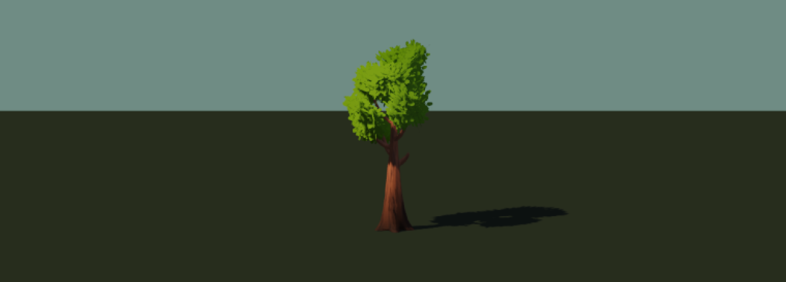
Editable source, exports and rights
Editable Blender file
- open-boughs GLB — Quaternius Stylized Nature MegaKit Standard, CC0; normalized and source normal maps removed for controlled light.
- layered-crown GLB — Quaternius Stylized Nature MegaKit Standard, CC0; normalized and source normal maps removed for controlled light.
- sheltered-crown GLB — Quaternius Stylized Nature MegaKit Standard, CC0; normalized and source normal maps removed for controlled light.
Exact source and export hashes are retained in the repository catalog.
Nature
Conifer
Working choice · sheltered pine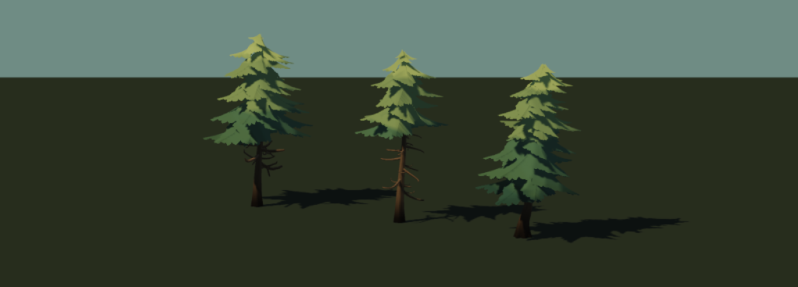
A · tiered boughsSource-authored Pine_1 structure; broad moss/olive or stone groups, restrained bark and controlled canopy normals. tiered boughs.
5.60 m tall · 3,947 triangles
B · slender crownSource-authored Pine_3 structure; broad moss/olive or stone groups, restrained bark and controlled canopy normals. slender crown.
5.60 m tall · 4,964 triangles
C · sheltered pineSource-authored Pine_5 structure; broad moss/olive or stone groups, restrained bark and controlled canopy normals. sheltered pine.
5.60 m tall · 1,646 triangles
Why this choice: Sheltered pine has the strongest broad lower boughs. Overlapping planes remain visible in close views; the working scene keeps foliage still to avoid distracting leaf motion.
Original/library source control
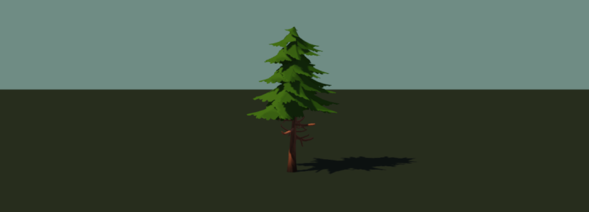
Editable source, exports and rights
Editable Blender file
- tiered-boughs GLB — Quaternius Stylized Nature MegaKit Standard, CC0. OpenLegend material groups and selected crown proportions; no source normal maps.
- slender-crown GLB — Quaternius Stylized Nature MegaKit Standard, CC0. OpenLegend material groups and selected crown proportions; no source normal maps.
- sheltered-pine GLB — Quaternius Stylized Nature MegaKit Standard, CC0. OpenLegend material groups and selected crown proportions; no source normal maps.
Exact source and export hashes are retained in the repository catalog.
Nature
Pale woodland tree
Working choice · slender birch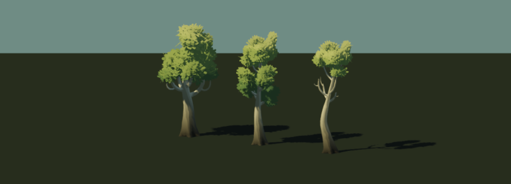
A · forked trunkSource-authored CommonTree_2 structure; broad moss/olive or stone groups, restrained bark and controlled canopy normals. forked trunk.
4.80 m tall · 5,648 triangles
B · slender birchSource-authored CommonTree_3 structure; broad moss/olive or stone groups, restrained bark and controlled canopy normals. slender birch.
4.80 m tall · 3,505 triangles
C · open branchesSource-authored CommonTree_4 structure; broad moss/olive or stone groups, restrained bark and controlled canopy normals. open branches.
4.80 m tall · 4,066 triangles
Why this choice: Slender birch separates its pale trunk from rounded broadleaf crowns. Dark bark marks are subordinate to the trunk silhouette.
Original/library source control
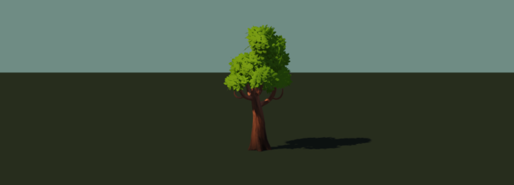
Editable source, exports and rights
Editable Blender file
- forked-trunk GLB — Quaternius Stylized Nature MegaKit Standard, CC0. OpenLegend material groups and selected crown proportions; no source normal maps.
- slender-birch GLB — Quaternius Stylized Nature MegaKit Standard, CC0. OpenLegend material groups and selected crown proportions; no source normal maps.
- open-branches GLB — Quaternius Stylized Nature MegaKit Standard, CC0. OpenLegend material groups and selected crown proportions; no source normal maps.
Exact source and export hashes are retained in the repository catalog.
Nature
Woodland shrub
Working choice · rounded thicket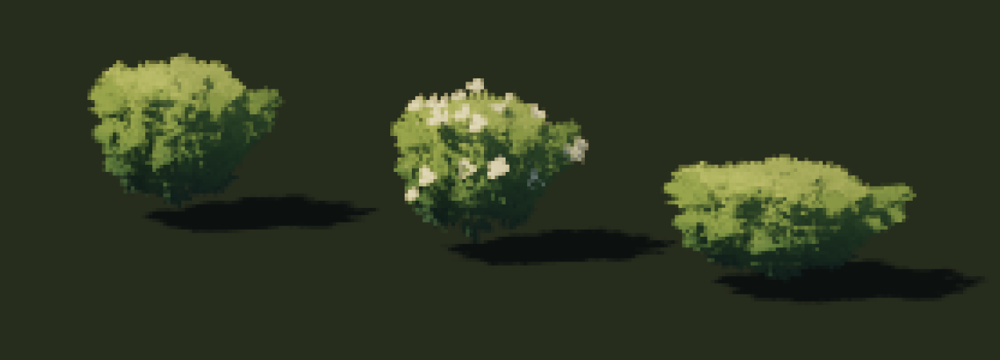
A · rounded thicketSource-authored Bush_Common structure; broad moss/olive or stone groups, restrained bark and controlled canopy normals. rounded thicket.
1.20 m tall · 900 triangles
B · open floweringSource-authored Bush_Common_Flowers structure; broad moss/olive or stone groups, restrained bark and controlled canopy normals. open flowering.
1.20 m tall · 1,368 triangles
C · low spreadingSource-authored Bush_Common structure; broad moss/olive or stone groups, restrained bark and controlled canopy normals. low spreading.
0.92 m tall · 900 triangles
Why this choice: Rounded thicket keeps compact overlapping foliage below the tree line. Berry bushes have their own distinct fruit clusters.
Original/library source control
Editable source, exports and rights
Editable Blender file
- rounded-thicket GLB — Quaternius Stylized Nature MegaKit Standard, CC0. OpenLegend material groups and selected crown proportions; no source normal maps.
- open-flowering GLB — Quaternius Stylized Nature MegaKit Standard, CC0. OpenLegend material groups and selected crown proportions; no source normal maps.
- low-spreading GLB — Quaternius Stylized Nature MegaKit Standard, CC0. OpenLegend material groups and selected crown proportions; no source normal maps.
Exact source and export hashes are retained in the repository catalog.
Nature
Weathered stone
Working choice · rounded shoulder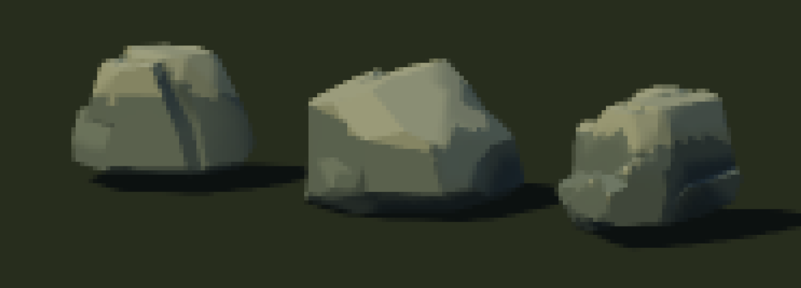
A · rounded shoulderSource-authored Rock_Medium_1 structure; broad moss/olive or stone groups, restrained bark and controlled canopy normals. rounded shoulder.
0.80 m tall · 342 triangles
B · split planesSource-authored Rock_Medium_2 structure; broad moss/olive or stone groups, restrained bark and controlled canopy normals. split planes.
0.80 m tall · 244 triangles
C · low slabSource-authored Rock_Medium_3 structure; broad moss/olive or stone groups, restrained bark and controlled canopy normals. low slab.
0.80 m tall · 522 triangles
Why this choice: Rounded shoulder gives useful large planes and a grounded base. This changes decorative rocks; rectangular physical banks/supports remain visible in the landscape.
Original/library source control
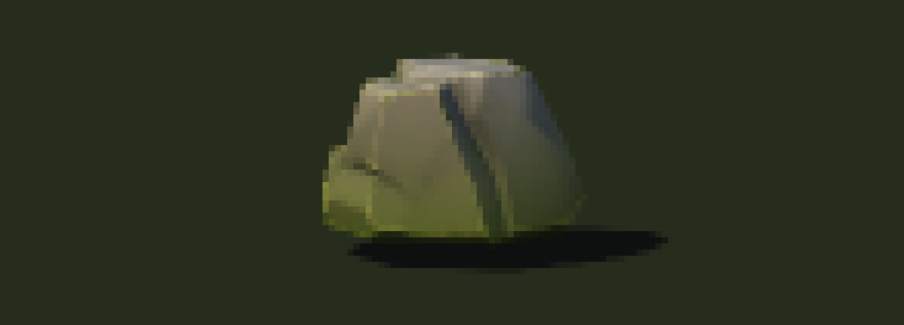
Editable source, exports and rights
Editable Blender file
- rounded-shoulder GLB — Quaternius Stylized Nature MegaKit Standard, CC0. OpenLegend material groups and selected crown proportions; no source normal maps.
- split-planes GLB — Quaternius Stylized Nature MegaKit Standard, CC0. OpenLegend material groups and selected crown proportions; no source normal maps.
- low-slab GLB — Quaternius Stylized Nature MegaKit Standard, CC0. OpenLegend material groups and selected crown proportions; no source normal maps.
Exact source and export hashes are retained in the repository catalog.
Nature
Ground growth
Working choice · broad tuft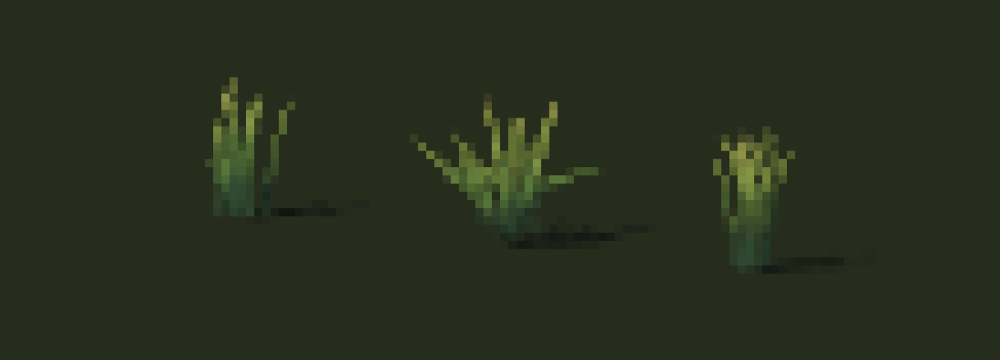
A · broad tuftSource-authored Grass_Common_Short structure; broad moss/olive or stone groups, restrained bark and controlled canopy normals. broad tuft.
0.42 m tall · 155 triangles
B · fine tuftSource-authored Grass_Wispy_Short structure; broad moss/olive or stone groups, restrained bark and controlled canopy normals. fine tuft.
0.42 m tall · 494 triangles
C · open stemsSource-authored Grass_Common_Tall structure; broad moss/olive or stone groups, restrained bark and controlled canopy normals. open stems.
0.42 m tall · 326 triangles
Why this choice: Broad tuft reads as one plant at normal distance, with fewer isolated bright blade tips.
Original/library source control
Editable source, exports and rights
Editable Blender file
- broad-tuft GLB — Quaternius Stylized Nature MegaKit Standard, CC0. OpenLegend material groups and selected crown proportions; no source normal maps.
- fine-tuft GLB — Quaternius Stylized Nature MegaKit Standard, CC0. OpenLegend material groups and selected crown proportions; no source normal maps.
- open-stems GLB — Quaternius Stylized Nature MegaKit Standard, CC0. OpenLegend material groups and selected crown proportions; no source normal maps.
Exact source and export hashes are retained in the repository catalog.
Nature
Woodland fern
Working choice · open fronds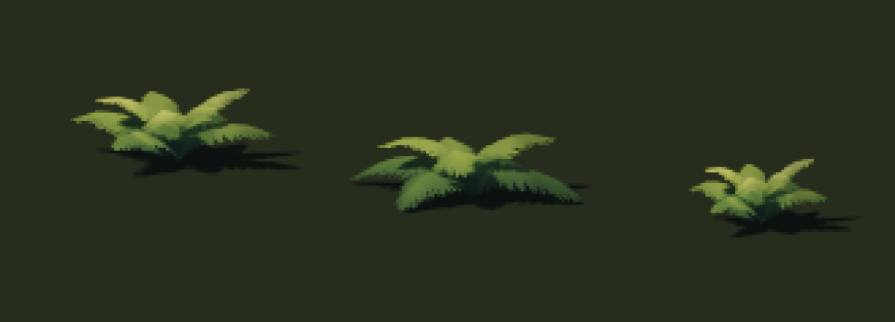
A · open frondsSource-authored Fern_1 structure; broad moss/olive or stone groups, restrained bark and controlled canopy normals. open fronds.
0.65 m tall · 288 triangles
B · arching frondsSource-authored Fern_1 structure; broad moss/olive or stone groups, restrained bark and controlled canopy normals. arching fronds.
0.54 m tall · 288 triangles
C · sheltered frondsSource-authored Fern_1 structure; broad moss/olive or stone groups, restrained bark and controlled canopy normals. sheltered fronds.
0.60 m tall · 288 triangles
Why this choice: Open fronds make the plant type distinct from ordinary grass while leaving the ground visible between leaves.
Original/library source control
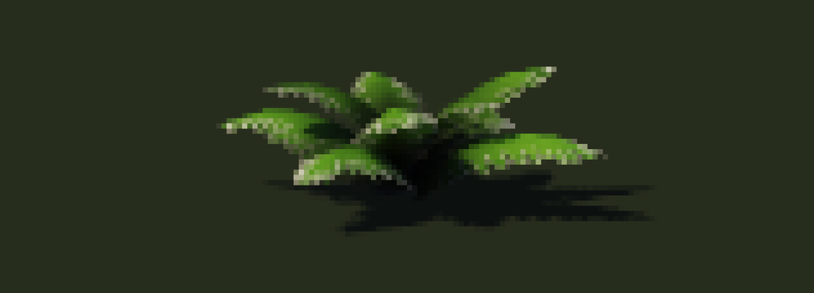
Editable source, exports and rights
Editable Blender file
- open-fronds GLB — Quaternius Stylized Nature MegaKit Standard, CC0. OpenLegend material groups and selected crown proportions; no source normal maps.
- arching-fronds GLB — Quaternius Stylized Nature MegaKit Standard, CC0. OpenLegend material groups and selected crown proportions; no source normal maps.
- sheltered-fronds GLB — Quaternius Stylized Nature MegaKit Standard, CC0. OpenLegend material groups and selected crown proportions; no source normal maps.
Exact source and export hashes are retained in the repository catalog.
Equipment
Sword
Working choice · broad tip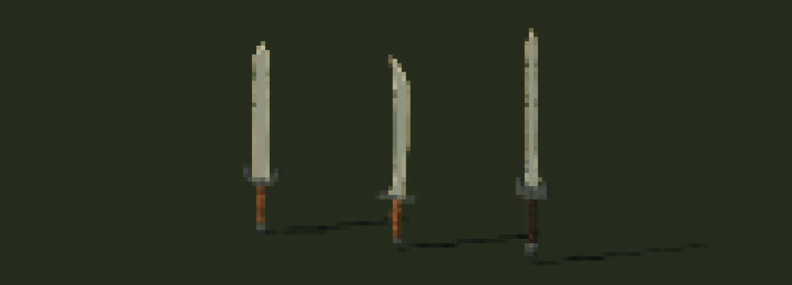
A · straight crossguardStraight blade, distinct guard and wrapped grip; restrained steel facets.
1.10 m tall · 872 triangles
B · broad tipBroader shaped tip and changed guard; compare the blade silhouette at the same length.
1.10 m tall · 942 triangles
C · long gripLonger two-handed source with a longer grip and darker fittings. An equipment study, not newly granted gear.
1.35 m tall · 1,033 triangles
Why this choice: Broad tip keeps the blade and hilt readable at the shared density. The narrow alternatives lose more of their shape at ordinary distance. The camp sword is explicitly a display fixture.
Original/library source control
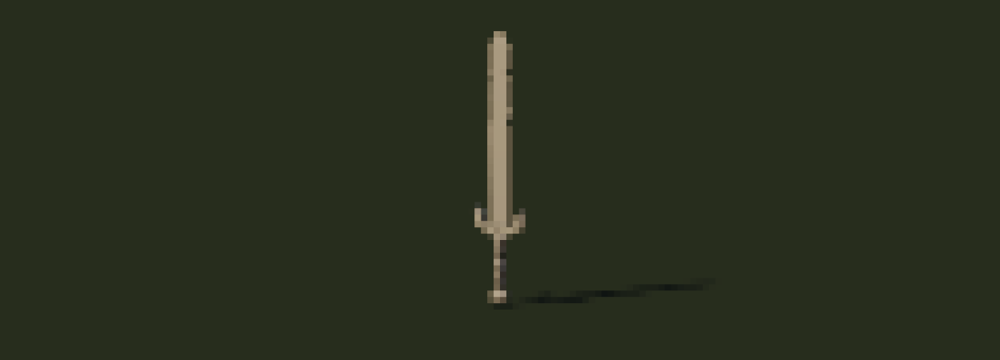
Editable source, exports and rights
Editable Blender file
- straight-crossguard GLB — Quaternius Modular Weapons Pack, CC0. OpenLegend normalizes scale and authors restrained steel, timber and leather colors; source topology retained.
- broad-tip GLB — Quaternius Modular Weapons Pack, CC0. OpenLegend normalizes scale and authors restrained steel, timber and leather colors; source topology retained.
- long-grip GLB — Quaternius Modular Weapons Pack, CC0. OpenLegend normalizes scale and authors restrained steel, timber and leather colors; source topology retained.
Exact source and export hashes are retained in the repository catalog.
Equipment
Shield
Working choice · round boards
A · round boardsRound timber shield with a clear central boss, rim and board seams.
0.76 m tall · 1,056 triangles
B · reinforced roundDifferent rim and reinforcement layout on a round timber form.
0.76 m tall · 1,204 triangles
C · heaterTapered shield form with a clear point, framed timber and restrained metal edging.
0.84 m tall · 1,968 triangles
Why this choice: Round boards separate the wood face, rim and central fitting with a strong silhouette.
Original/library source control
Editable source, exports and rights
Editable Blender file
- round-boards GLB — Quaternius Modular Weapons Pack, CC0. OpenLegend normalizes scale and authors restrained steel, timber and leather colors; source topology retained.
- reinforced-round GLB — Quaternius Modular Weapons Pack, CC0. OpenLegend normalizes scale and authors restrained steel, timber and leather colors; source topology retained.
- heater GLB — Quaternius Modular Weapons Pack, CC0. OpenLegend normalizes scale and authors restrained steel, timber and leather colors; source topology retained.
Exact source and export hashes are retained in the repository catalog.
Equipment
Knife
Working choice · utility
A · utilityShort practical blade, restrained guard and a clear wooden grip.
0.32 m tall · 726 triangles
B · leaf pointDifferent leaf-shaped blade and handle layout at the same useful length.
0.32 m tall · 736 triangles
C · long knifeShortened straight source with a narrow blade; compare grip-to-blade balance.
0.42 m tall · 872 triangles
Why this choice: Utility has a readable short blade and plain grip, fitting the practical woodland equipment language.
Original/library source control
Editable source, exports and rights
Editable Blender file
- utility GLB — Quaternius Modular Weapons Pack, CC0. OpenLegend normalizes scale and authors restrained steel, timber and leather colors; source topology retained.
- leaf-point GLB — Quaternius Modular Weapons Pack, CC0. OpenLegend normalizes scale and authors restrained steel, timber and leather colors; source topology retained.
- long-knife GLB — Quaternius Modular Weapons Pack, CC0. OpenLegend normalizes scale and authors restrained steel, timber and leather colors; source topology retained.
Exact source and export hashes are retained in the repository catalog.
Equipment
Bow
Working choice · field bow
A · field bowBent timber limbs, quiet grip and a visible string; follows the existing field-bow idea.
1.25 m tall · 728 triangles
B · curved limbsDifferent limb curve and reinforcement, compared at equal height.
1.25 m tall · 664 triangles
C · bound gripRestrained timber adaptation of the shaped source with distinct grip fittings.
1.25 m tall · 776 triangles
Why this choice: Field bow keeps one clear bent-wood line and a restrained grip. Small string detail remains limited at overview distance.
Original/library source control
Editable source, exports and rights
Editable Blender file
- field-bow GLB — Quaternius Modular Weapons Pack, CC0. OpenLegend normalizes scale and authors restrained steel, timber and leather colors; source topology retained.
- curved-limbs GLB — Quaternius Modular Weapons Pack, CC0. OpenLegend normalizes scale and authors restrained steel, timber and leather colors; source topology retained.
- bound-grip GLB — Quaternius Modular Weapons Pack, CC0. OpenLegend normalizes scale and authors restrained steel, timber and leather colors; source topology retained.
Exact source and export hashes are retained in the repository catalog.
Equipment
Arrow
Working choice · bone point
A · bone pointPale point and paired fiber fletching on a straight shaft.
0.72 m tall · 224 triangles
B · broad fletchingWider source feather geometry for readability at distance.
0.72 m tall · 224 triangles
C · slender shaftSlimmer shaft and quieter fletching for a lighter outline.
0.72 m tall · 224 triangles
Why this choice: Bone point gives a useful point/shaft/flight distinction without a bright metallic speck dominating the image.
Original/library source control
Editable source, exports and rights
Editable Blender file
- bone-point GLB — Quaternius Modular Weapons Pack, CC0. OpenLegend normalizes scale and authors restrained steel, timber and leather colors; source topology retained.
- broad-fletching GLB — Quaternius Modular Weapons Pack, CC0. OpenLegend normalizes scale and authors restrained steel, timber and leather colors; source topology retained.
- slender-shaft GLB — Quaternius Modular Weapons Pack, CC0. OpenLegend normalizes scale and authors restrained steel, timber and leather colors; source topology retained.
Exact source and export hashes are retained in the repository catalog.
Equipment
Fiber cord
Working choice · loose coil
A · loose coilAn intentionally laid cord silhouette, with a quiet broad strand. Compare coil, figure-eight and loose working length at real scale.
0.01 m tall · 2,640 triangles
B · figure eightAn intentionally laid cord silhouette, with a quiet broad strand. Compare coil, figure-eight and loose working length at real scale.
0.02 m tall · 1,152 triangles
C · working lengthAn intentionally laid cord silhouette, with a quiet broad strand. Compare coil, figure-eight and loose working length at real scale.
0.01 m tall · 192 triangles
Why this choice: Loose coil communicates flexible cord through a continuous loop. It is authored geometry rather than an invented library provenance claim.
No additional source-control image: cord and sling are authored parts; stone-tool variants reshape the licensed stone source recorded below.
Editable source, exports and rights
Editable Blender file
- loose-coil GLB — OpenLegend authored cord/leather patterns, AGPL-3.0-only; stone-tool source Kenney Survival Kit, CC0.
- figure-eight GLB — OpenLegend authored cord/leather patterns, AGPL-3.0-only; stone-tool source Kenney Survival Kit, CC0.
- working-length GLB — OpenLegend authored cord/leather patterns, AGPL-3.0-only; stone-tool source Kenney Survival Kit, CC0.
Exact source and export hashes are retained in the repository catalog.
Equipment
Field sling
Working choice · split pouch
A · split pouchFitted leather pouch and two cords: split, rounded and narrow pouch alternatives. A display study of the existing sling, not a new action.
0.03 m tall · 328 triangles
B · oval pouchFitted leather pouch and two cords: split, rounded and narrow pouch alternatives. A display study of the existing sling, not a new action.
0.03 m tall · 336 triangles
C · long pouchFitted leather pouch and two cords: split, rounded and narrow pouch alternatives. A display study of the existing sling, not a new action.
0.03 m tall · 336 triangles
Why this choice: Split pouch gives the leather a clear central shape and leaves the two cords legible at inspection distance.
No additional source-control image: cord and sling are authored parts; stone-tool variants reshape the licensed stone source recorded below.
Editable source, exports and rights
Editable Blender file
- split-pouch GLB — OpenLegend authored cord/leather patterns, AGPL-3.0-only; stone-tool source Kenney Survival Kit, CC0.
- oval-pouch GLB — OpenLegend authored cord/leather patterns, AGPL-3.0-only; stone-tool source Kenney Survival Kit, CC0.
- long-pouch GLB — OpenLegend authored cord/leather patterns, AGPL-3.0-only; stone-tool source Kenney Survival Kit, CC0.
Exact source and export hashes are retained in the repository catalog.
Equipment
Stone tool
Working choice · broad flake
A · broad flakeKenney rock planes reshaped into a thin flake, with a lighter cutting edge. Broad flake, pointed flake and scraper silhouettes.
0.18 m tall · 120 triangles
B · pointed flakeKenney rock planes reshaped into a thin flake, with a lighter cutting edge. Broad flake, pointed flake and scraper silhouettes.
0.14 m tall · 156 triangles
C · small scraperKenney rock planes reshaped into a thin flake, with a lighter cutting edge. Broad flake, pointed flake and scraper silhouettes.
0.02 m tall · 274 triangles
Why this choice: Broad flake makes a distinct cutting plane. At ordinary distance this small object needs inspection; increasing its real size is not the solution.
No additional source-control image: cord and sling are authored parts; stone-tool variants reshape the licensed stone source recorded below.
Editable source, exports and rights
Editable Blender file
- broad-flake GLB — OpenLegend authored cord/leather patterns, AGPL-3.0-only; stone-tool source Kenney Survival Kit, CC0.
- pointed-flake GLB — OpenLegend authored cord/leather patterns, AGPL-3.0-only; stone-tool source Kenney Survival Kit, CC0.
- small-scraper GLB — OpenLegend authored cord/leather patterns, AGPL-3.0-only; stone-tool source Kenney Survival Kit, CC0.
Exact source and export hashes are retained in the repository catalog.
Resources and camp
Supply chest
Working choice · banded lid
A · carved lidClosed carved lid from the retained generated source, with quiet oak boards and restrained iron. Ornament remains visible for comparison.
0.80 m tall · 6,912 triangles
B · banded lidPractical banded lid from the Kenney source, with clear hinges, clasp and board construction. The broad form survives a small game view.
0.80 m tall · 322 triangles
C · plank cacheLow square plank cache from the Kenney source. Plain construction suits supplies and offers a less ornamental silhouette.
0.80 m tall · 124 triangles
Why this choice: Banded lid is the clearest practical timber-and-iron chest. The ornate generated chest is a preserved comparison, not the default for every bundle and stockpile.
Original/library source control
Editable source, exports and rights
Editable Blender file
- carved-lid GLB — Production Gothic reward chest created with Meshy; runtime processing by Samfa12/Codex. CC BY 4.0; OpenLegend closes, fits and repaints the source.
- banded-lid GLB — Kenney Survival Kit, CC0; OpenLegend fits and repaints the source.
- plank-cache GLB — Kenney Survival Kit, CC0; OpenLegend fits and repaints the source.
Exact source and export hashes are retained in the repository catalog.
Resources and camp
Berry bush
Working choice · fruit groups
A · fruit groupsFruit groups: source-authored structure, restrained material regions and clear practical use. Display art does not add supplies or change physical cover.
1.05 m tall · 1,908 triangles
B · open canesOpen canes: source-authored structure, restrained material regions and clear practical use. Display art does not add supplies or change physical cover.
1.05 m tall · 1,620 triangles
C · low thicketLow thicket: source-authored structure, restrained material regions and clear practical use. Display art does not add supplies or change physical cover.
0.82 m tall · 1,908 triangles
Why this choice: Fruit groups make berries identifiable against ordinary shrubs. The depleted export removes fruit while keeping the same plant silhouette.
Original/library source control
Editable source, exports and rights
Editable Blender file
- fruit-groups GLB — Quaternius Stylized Nature MegaKit Standard, CC0. OpenLegend proportions, material grouping and authored details.
- open-canes GLB — Quaternius Stylized Nature MegaKit Standard, CC0. OpenLegend proportions, material grouping and authored details.
- low-thicket GLB — Quaternius Stylized Nature MegaKit Standard, CC0. OpenLegend proportions, material grouping and authored details.
Exact source and export hashes are retained in the repository catalog.
Resources and camp
River reeds
Working choice · river fan
A · river fanRiver fan: source-authored structure, restrained material regions and clear practical use. Display art does not add supplies or change physical cover.
1.00 m tall · 622 triangles
B · broad leavesBroad leaves: source-authored structure, restrained material regions and clear practical use. Display art does not add supplies or change physical cover.
1.00 m tall · 326 triangles
C · broken stemsBroken stems: source-authored structure, restrained material regions and clear practical use. Display art does not add supplies or change physical cover.
0.88 m tall · 622 triangles
Why this choice: River fan makes a readable bank-side clump with gaps, rather than a solid grass wall.
Original/library source control
Editable source, exports and rights
Editable Blender file
- river-fan GLB — Quaternius Stylized Nature MegaKit Standard, CC0. OpenLegend proportions, material grouping and authored details.
- broad-leaves GLB — Quaternius Stylized Nature MegaKit Standard, CC0. OpenLegend proportions, material grouping and authored details.
- broken-stems GLB — Quaternius Stylized Nature MegaKit Standard, CC0. OpenLegend proportions, material grouping and authored details.
Exact source and export hashes are retained in the repository catalog.
Resources and camp
Dry fibers
Working choice · standing stems
A · standing stemsStanding stems: source-authored structure, restrained material regions and clear practical use. Display art does not add supplies or change physical cover.
0.42 m tall · 326 triangles
B · loose stemsLoose stems: source-authored structure, restrained material regions and clear practical use. Display art does not add supplies or change physical cover.
0.42 m tall · 622 triangles
C · low tuftLow tuft: source-authored structure, restrained material regions and clear practical use. Display art does not add supplies or change physical cover.
0.42 m tall · 155 triangles
Why this choice: Standing stems distinguish the pale harvestable material from green meadow tufts.
Original/library source control
Editable source, exports and rights
Editable Blender file
- standing-stems GLB — Quaternius Stylized Nature MegaKit Standard, CC0. OpenLegend proportions, material grouping and authored details.
- loose-stems GLB — Quaternius Stylized Nature MegaKit Standard, CC0. OpenLegend proportions, material grouping and authored details.
- low-tuft GLB — Quaternius Stylized Nature MegaKit Standard, CC0. OpenLegend proportions, material grouping and authored details.
Exact source and export hashes are retained in the repository catalog.
Resources and camp
Fallen wood
Working choice · loose branches
A · loose branchesLoose branches: source-authored structure, restrained material regions and clear practical use. Display art does not add supplies or change physical cover.
0.24 m tall · 64 triangles
B · fallen logFallen log: source-authored structure, restrained material regions and clear practical use. Display art does not add supplies or change physical cover.
0.24 m tall · 88 triangles
C · forked stumpForked stump: source-authored structure, restrained material regions and clear practical use. Display art does not add supplies or change physical cover.
0.24 m tall · 52 triangles
Why this choice: Loose branches make a readable stockpile rather than another chest. Ends and bark carry the material contrast.
Original/library source control
Editable source, exports and rights
Editable Blender file
- loose-branches GLB — Kenney Survival Kit, CC0. OpenLegend proportions, material grouping and authored details.
- fallen-log GLB — Kenney Survival Kit, CC0. OpenLegend proportions, material grouping and authored details.
- forked-stump GLB — Kenney Survival Kit, CC0. OpenLegend proportions, material grouping and authored details.
Exact source and export hashes are retained in the repository catalog.
Resources and camp
Loose river stones
Working choice · loose stones
A · loose stonesLoose stones: source-authored structure, restrained material regions and clear practical use. Display art does not add supplies or change physical cover.
0.22 m tall · 44 triangles
B · flat stoneFlat stone: source-authored structure, restrained material regions and clear practical use. Display art does not add supplies or change physical cover.
0.07 m tall · 274 triangles
C · split stoneSplit stone: source-authored structure, restrained material regions and clear practical use. Display art does not add supplies or change physical cover.
0.22 m tall · 120 triangles
Why this choice: Loose stones retain separate silhouettes and quiet cool planes beside the water.
Original/library source control
Editable source, exports and rights
Editable Blender file
- loose-stones GLB — Kenney Survival Kit, CC0. OpenLegend proportions, material grouping and authored details.
- flat-stone GLB — Kenney Survival Kit, CC0. OpenLegend proportions, material grouping and authored details.
- split-stone GLB — Kenney Survival Kit, CC0. OpenLegend proportions, material grouping and authored details.
Exact source and export hashes are retained in the repository catalog.
Resources and camp
Carved work marker
Working choice · single board
A · single boardSingle board: source-authored structure, restrained material regions and clear practical use. Display art does not add supplies or change physical cover.
0.90 m tall · 28 triangles
B · crossroadsCrossroads: source-authored structure, restrained material regions and clear practical use. Display art does not add supplies or change physical cover.
0.90 m tall · 44 triangles
C · worn postWorn post: source-authored structure, restrained material regions and clear practical use. Display art does not add supplies or change physical cover.
0.69 m tall · 28 triangles
Why this choice: Single board is the simplest useful marker at ordinary size; more construction obscures its purpose.
Original/library source control
Editable source, exports and rights
Editable Blender file
- single-board GLB — Kenney Survival Kit, CC0. OpenLegend proportions, material grouping and authored details.
- crossroads GLB — Kenney Survival Kit, CC0. OpenLegend proportions, material grouping and authored details.
- worn-post GLB — Kenney Survival Kit, CC0. OpenLegend proportions, material grouping and authored details.
Exact source and export hashes are retained in the repository catalog.
Resources and camp
Workshop supplies
Working choice · open box
A · open boxOpen box: source-authored structure, restrained material regions and clear practical use. Display art does not add supplies or change physical cover.
0.60 m tall · 156 triangles
B · wide boxWide box: source-authored structure, restrained material regions and clear practical use. Display art does not add supplies or change physical cover.
0.60 m tall · 156 triangles
C · stave barrelStave barrel: source-authored structure, restrained material regions and clear practical use. Display art does not add supplies or change physical cover.
0.60 m tall · 380 triangles
Why this choice: Open box shows purposeful contents, separating workshop supplies from a closed treasure chest.
Original/library source control
Editable source, exports and rights
Editable Blender file
- open-box GLB — Kenney Survival Kit, CC0. OpenLegend proportions, material grouping and authored details.
- wide-box GLB — Kenney Survival Kit, CC0. OpenLegend proportions, material grouping and authored details.
- stave-barrel GLB — Kenney Survival Kit, CC0. OpenLegend proportions, material grouping and authored details.
Exact source and export hashes are retained in the repository catalog.
Resources and camp
Travelling bundle
Working choice · rolled wool
A · rolled woolRolled wool: source-authored structure, restrained material regions and clear practical use. Display art does not add supplies or change physical cover.
0.35 m tall · 124 triangles
B · open bedrollOpen bedroll: source-authored structure, restrained material regions and clear practical use. Display art does not add supplies or change physical cover.
0.35 m tall · 144 triangles
C · tied bundleTied bundle: source-authored structure, restrained material regions and clear practical use. Display art does not add supplies or change physical cover.
0.31 m tall · 124 triangles
Why this choice: Rolled wool reads as cloth through its rolled end and broad surface, with restrained strapping.
Original/library source control
Editable source, exports and rights
Editable Blender file
- rolled-wool GLB — Kenney Survival Kit, CC0. OpenLegend proportions, material grouping and authored details.
- open-bedroll GLB — Kenney Survival Kit, CC0. OpenLegend proportions, material grouping and authored details.
- tied-bundle GLB — Kenney Survival Kit, CC0. OpenLegend proportions, material grouping and authored details.
Exact source and export hashes are retained in the repository catalog.
Resources and camp
Riverside workbench
Working choice · open bench
A · open benchOpen bench: source-authored structure, restrained material regions and clear practical use. Display art does not add supplies or change physical cover.
0.85 m tall · 236 triangles
B · long tableLong table: source-authored structure, restrained material regions and clear practical use. Display art does not add supplies or change physical cover.
0.85 m tall · 236 triangles
C · narrow benchNarrow bench: source-authored structure, restrained material regions and clear practical use. Display art does not add supplies or change physical cover.
0.85 m tall · 236 triangles
Why this choice: Open bench keeps the working surface and legs distinct. The workshop camera now faces across the bank so its tree does not cover the table.
Original/library source control
Editable source, exports and rights
Editable Blender file
- open-bench GLB — Kenney Survival Kit, CC0. OpenLegend proportions, material grouping and authored details.
- long-table GLB — Kenney Survival Kit, CC0. OpenLegend proportions, material grouping and authored details.
- narrow-bench GLB — Kenney Survival Kit, CC0. OpenLegend proportions, material grouping and authored details.
Exact source and export hashes are retained in the repository catalog.
Resources and camp
Travelling pack
Working choice · canvas pack
A · canvas packCanvas pack: source-authored structure, restrained material regions and clear practical use. Display art does not add supplies or change physical cover.
0.48 m tall · 1,748 triangles
B · broad flapBroad flap: source-authored structure, restrained material regions and clear practical use. Display art does not add supplies or change physical cover.
0.48 m tall · 1,748 triangles
C · slender packSlender pack: source-authored structure, restrained material regions and clear practical use. Display art does not add supplies or change physical cover.
0.48 m tall · 1,748 triangles
Why this choice: Canvas pack uses an acquired Quaternius body, cloth panels and visible fastening. It is an equipment study, not a replacement for Mara’s distinctive satchel.
Original/library source control
Editable source, exports and rights
Editable Blender file
- canvas-pack GLB — Quaternius Survival Pack, CC0. OpenLegend proportions, material grouping and authored details.
- broad-flap GLB — Quaternius Survival Pack, CC0. OpenLegend proportions, material grouping and authored details.
- slender-pack GLB — Quaternius Survival Pack, CC0. OpenLegend proportions, material grouping and authored details.
Exact source and export hashes are retained in the repository catalog.
Resources and camp
Canvas shelter
Working choice · open awning
A · open awningOpen awning: source-authored structure, restrained material regions and clear practical use. Display art does not add supplies or change physical cover.
1.90 m tall · 136 triangles
B · canvas tentCanvas tent: source-authored structure, restrained material regions and clear practical use. Display art does not add supplies or change physical cover.
1.90 m tall · 148 triangles
C · framed tentFramed tent: source-authored structure, restrained material regions and clear practical use. Display art does not add supplies or change physical cover.
1.90 m tall · 124 triangles
Why this choice: Open awning leaves the covered space visible. This is a construction comparison; physical shelter openings and support rules are unchanged.
Original/library source control
Editable source, exports and rights
Editable Blender file
- open-awning GLB — Kenney Survival Kit, CC0. OpenLegend proportions, material grouping and authored details.
- canvas-tent GLB — Kenney Survival Kit, CC0. OpenLegend proportions, material grouping and authored details.
- framed-tent GLB — Kenney Survival Kit, CC0. OpenLegend proportions, material grouping and authored details.
Exact source and export hashes are retained in the repository catalog.
07 / Observed results and limits
What this study establishes
Fresh seed-1086 capture: 129 entities, 27 actors, 27 supports, 10 blockers and 1,250 scenery records. The map digest is unchanged. New appearance selections are authored with the bundled starting world; no active saved game was replaced.
| Apple M1 Pro · 32 GiB | Median | p95 | p99 | Maximum |
|---|
| Warm daylight · displayed interval | 16.7 ms | 18.6 ms | 18.7 ms | 18.7 ms |
| Warm daylight · CPU update | 2.2 ms | 3.3 ms | 5.0 ms | 6.7 ms |
| Warm daylight · render submission | 5.3 ms | 6.1 ms | 7.5 ms | 11.8 ms |
| First 10 s after reload · displayed interval | 16.7 ms | 18.4 ms | 18.6 ms | 400 ms |
Measured in the in-app WebGL2 browser at 1280×720, 1246×468 canvas, display DPR 2 / render DPR 1, Economy shadows, 40 samples/metre, staged walking. Warm window: 601 intervals; about 689 draws/frame and 99.58 MB of counted textures/vertex/index buffers. These are engine counters, not driver VRAM. The initial shader/model hitch remains; this is not a strict 60 Hz or wider-device result.
The inspector unloads retired alternatives: stone tools → seven people → stone tools returned to the same 19,064,620 texture bytes, 32,064 vertex bytes and 3,324 index bytes. Overlapping comparison replacement, interrupted mercenary animation and ground-bird wing pose defects were corrected and rechecked.
Visible limitations to keep in the review
- Rectangular physical banks and support walls still look less natural than the organic art references.
- Faces are legible through grouped features at close scale; ordinary and overview views cannot carry portrait detail.
- Conifer planes, coarse bear anatomy and simple authored human motion remain apparent in close inspection.
- Source paint is fixed and stable, but projected silhouettes, subpixel leaves and highlights still change with viewpoint. No universal zero-shimmer guarantee is established.
- Unprepared rest/death/work poses, fish, food and some effects retain their existing sprites. This is not an all-3D conversion.
- Owner-supplied mercenary production rights remain unqualified. The bear keeps CC BY 3.0 attribution; the generated chest retains its source caveat.
External paid-tool cost: $0 settled, $0 reserved, $0 uncertain against the authorized $25 cap. Blender and licensed downloaded sources were used locally.
Portable written review and run instructions · All variant metadata · Earlier rejected study